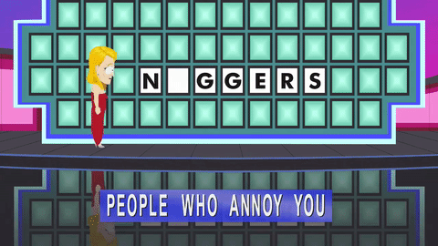

Promises
Frontmen
Callbacks
- just a function
- passed as an argument
- which gets called (back) later
function acceptACallback(callback) {
// do stuff
callback()
}
acceptACallback(function() {
console.log('callback called (back)')
})
// 'callback called (back)'
Callback Hell
getData(function(a) {
getMoreData(a, function(b) {
getMoreData(b, function(c) {
getMoreData(c, function(d) {
getMoreData(d, function(e) {
getMoreData(e, function(f) {
üò©
})
})
})
})
})
})
A.k.a.: pyramid of doom
Callbacks or promises?
Promises don't replace callbacks
Promises use callbacks üòé
Callbacks
encourage nesting (callback hell)
getData(function(a) {
getMoreData(a, function(b) {
getMoreData(b, function(c) {
getMoreData(c, function(d) {
...
})
})
})
})
Promises
encourage modularity (through chaining)
getData()
.then(function(a) {
return getMoreData(a)
})
.then(function(b) {
return getMoreData(b)
})
.then(function(c) {
return getMoreData(c)
})
...
Callbacks
can be called multiple times
function acceptACallback(callback) {
// do stuff
callback()
// do different stuff
callback()
// stuff...
callback()
}
acceptACallback(function() {
console.log('callback called (back)')
})
// 'callback called (back)'
// 'callback called (back)'
// 'callback called (back)'
Promises
always resolve once
gimmeAPromise()
.then(function() {
// runs *exactly* once
// (if promise fulfills)
})
Callbacks
have a convention for errors, e.g. in node:
fs.readFile('/foo.txt', function(err, data) {
if (err) {
console.log('Error!')
return
}
console.log(data)
}) Promises
have a contract for errors
gimmeAPromise()
.then(function() {
// success
}, function() {
// failure
})
What is a promise? ü§î
An object
With always the same methods:
var somePromise = gimmeAPromise()
console.log(somePromise)
// { then: function, catch: function, finally: function, ... }
Promise methods always return a new promise
var thenResult = gimmeAPromise().then()
var catchResult = gimmeAPromise().catch()
var finallyResult = gimmeAPromise().finally()
console.log(thenResult)
// { then: function, catch: function, finally: function, ... }
console.log(catchResult)
// { then: function, catch: function, finally: function, ... }
console.log(finallyResult)
// { then: function, catch: function, finally: function, ... }
That's why promises can be "chained"
Because the interface stays the same:
gimmeAPromise()
.then()
.then()
.catch()
.finally()
Even when a callback returns a promise
The promise is "unwrapped":
gimmeAPromise()
.then(function() {
// gimmeAnotherPromise resolves to 42
return gimmeAnotherPromise()
})
.then(function(result) {
console.log(result)
// 42
})
console.log isn't called before the promise that gimmeAnotherPromise() returns resolves!
So there's no need to nest promises
Don't do this:
gimmeAPromise()
.then(function() {
gimmeAnotherPromise().then(function() {
andAnotherPromise().then(function() {
...
})
})
})
Remember callback hell? üòû
Instead do this:
gimmeAPromise()
.then(function() {
return gimmeAnotherPromise()
})
.then(function() {
return andAnotherPromise()
})
.then(function() {
...
})
Modularity! üòÉ
Because it leads to:
gimmeAPromise()
.then(timesTwo)
.then(plusFive)
.finally(cleanUp)
gimmeAnotherPromise()
.then(plusFive)
.then(cleanUp)
.then(timesTwo)
function timesTwo(value) { return value * 2 }
function plusFive(value) { return value + 5 }
function cleanup() { return üóë }
Composition! üòç
Creating a promise
Using the native Promise function
function gimmeAPromise() {
return new Promise(function(resolve, reject) {
setTimeout(function() {
if (someCondition) {
resolve(42)
} else {
reject('nope')
}
}, 1000)
})
}
Not fully supported üòí
Using the $q service:
function gimmeAPromise() {
return $q(function(resolve, reject) {
setTimeout(function() {
if (someCondition) {
resolve(42)
} else {
reject('nope')
}
}, 1000)
})
}
Converting any value to a promise
Promise.resolve
var result = Promise.resolve(42)
console.log(result)
// { then: function, catch: function, finally: function, ... }
$q.when / $q.resolve
var result = $q.when(42) // or $q.resolve(42)
console.log(result)
// { then: function, catch: function, finally: function, ... }
Even if the value is already a promise
var somePromise = gimmeAPromise() // resolves to 42
var result = Promise.resolve(somePromise)
console.log(result)
// { then: function, catch: function, finally: function, ... }
result.then(function(value) {
console.log(value)
// 42
})
Promise methods
then()
Accepts a resolve and/or reject callback:
gimmeAPromise()
.then(
function onResolve(value) { ... },
function onReject(message) { ... }
)
catch()
gimmeAPromise()
.catch(function onReject(message) { ... })
Shorthand for:
gimmeAPromise()
.then(
null,
function onReject(message) { ... }
)
finally()
"allows you to observe either the fulfillment or rejection of a promise, but to do so without modifying the final value" Angular docs
gimmeAPromise()
.finally(function() { ... })
Not in native Promise!
Rejecting promises
Using reject()
gimmeAPromise()
.then(function() {
return $q.reject('too bad')
// or Promise.reject()
})
.then(function() {
// never called
})
.catch(function(message) {
console.log(message)
// 'too bad'
})
Using throw
gimmeAPromise()
.then(function() {
throw new Error('too bad')
})
.then(function() {
// never called
})
.catch(function(message) {
console.log(message)
// 'too bad'
})
then turns exceptions into rejected promises
The first rejection handler is called.
Rejection handlers return a resolved promise by default
gimmeAPromise()
.then(function() {
throw new Error('too bad')
})
.catch(function(message) {
return message
})
.then(function(value) {
console.log(value)
// 'too bad'
}, function(message) {
console.log(message)
// doesn't get called!
})
When to return?
gimmeAPromise()
.then(function() {
// return? üòï
})
Functions return undefined by default
function meh() {
// does nothing
}
console.log(meh())
// undefined
Except when:
-
they have a return statement
function fortyTwo() { return 42 } console.log(fortyTwo()) // 42 -
they are called with the
newkeywordfunction constructMe() { // do nothing } console.log(new constructMe()) // {}
So, with promises
If you don't return you just get undefined:
gimmeAPromise()
.then(function() {
42
})
.then(function(result) {
console.log(result)
// undefined
})
Or maybe worse
timing issues:
// In a cucumber step file
element(by.id('button')).click()
.then(function() {
element(by.id('input')).sendKeys('some text')
})
.then(function() {
// this *might* run too early üò±
})
Promise.all / $q.all
"Combines multiple promises into a single promise that is resolved when all of the input promises are resolved." Angular docs
$q.all([
gimmeAPromise(), // resolves to 42
gimmeAnotherPromise() // resolves to 21
])
.then(function(results) {
console.log(results[0])
// 42
console.log(results[1])
// 21
})
Original order is maintained.
$q.all also accepts an object:
$q.all({
aPromise: gimmeAPromise(), // resolves to 42
anotherPromise: gimmeAnotherPromise() // resolves to 21
})
.then(function(results) {
console.log(results.aPromise)
// 42
console.log(results.anotherPromise)
// 21
})
In summary
- Callbacks encourage üí© code
- Promises encourage modularity (over nesting)
- Promises encourage composition
- Promises use a contract
- Promises are safe (everything's a promise)
Quiz
Why can promises be "chained"?
gimmeAPromise()
.then()
.then()
.catch()
.finally()
What is result?
gimmeAPromise()
.then(function() {
// gimmeAnotherPromise resolves to 42
return gimmeAnotherPromise()
})
.then(function(result) {
// ...
})
Why is it wise to always have a catch?
gimmeAPromise()
.then(function() {
// ...
})
.catch(function() {
// ...
})
What happens after a catch?
gimmeARejectedPromise()
.catch(function() {
// ...
})
.then(function() {
// when will this run?
})
.catch(function() {
// when will this run?
})
What are 2 reasons for returning from a promise callback?
Further reading
- Angular $q documentation
- Introduction to ES6 Promises – The Four Functions You Need To Avoid Callback Hell - James K. Nelson
- You Don't Know JS: Async and Performance - Kyle Simpson
This presentation can be found on github.com/flauwekeul/presentation-promises.